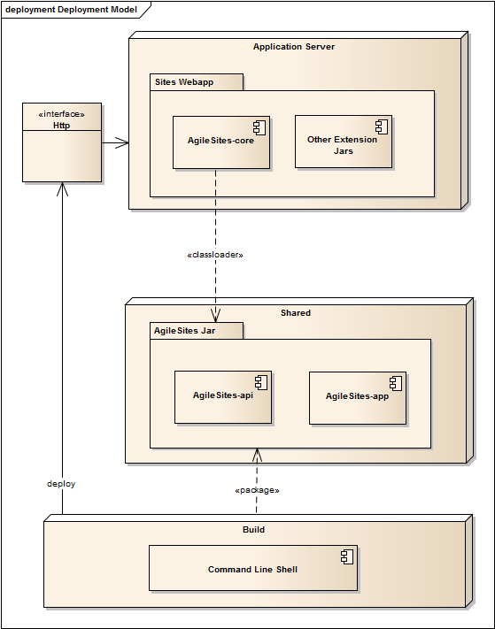

the Easy framework for Agile development with Oracle WebCenter Sites
The following diagram describes the architecture of the framework.

When you install the framework, it will deploy a core and some other extension jars within the application server. To install those jars, the application server must shut down and then the wcs-setup-offline command executed.
The framework includes also some some elements and site entries (installed starting the application server and then executing wcs-setup-online)
AAAgileRouter: route requests coming from the url assembler AAAgileSetup: execute the deployment of the codeAAAglieLog: handle log activation requests from the shellWhen the user executes the wcs-package-jar the application will be packaged in a single jars and deployed on the filesystem in a location accessible by the core.
The deployment of the jar does not require the restart of the application server sice it is automatically reloaded when it changes.
When the user create new template, site, layout or cselement with the wcs-generate tool, he needs to run the wcs-deploy command to deploy them.
All the templates are generated to be able to classes from the jar.
AgileSites - Written by Michele Sciabarrà - © 2013 Sciabarra srl
Open Source Software releases under the Apache License 2.0
Credits: Hosted on GitHub Pages using the Dinky theme for Jekyll Bootstrap